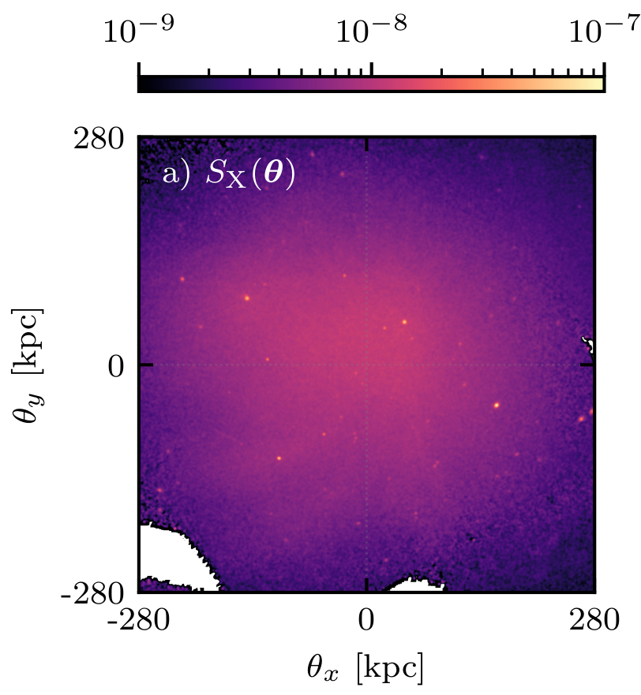
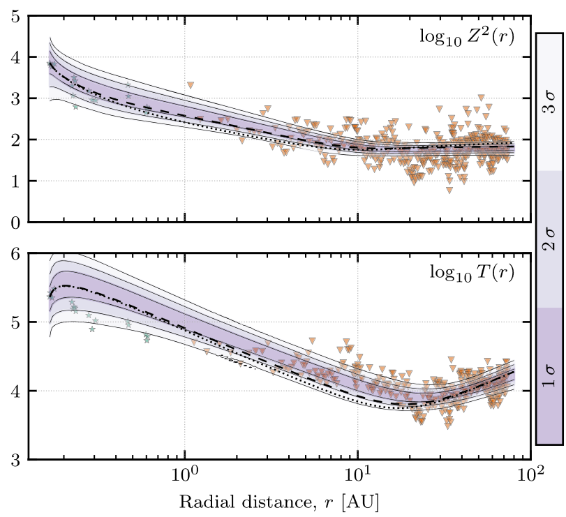
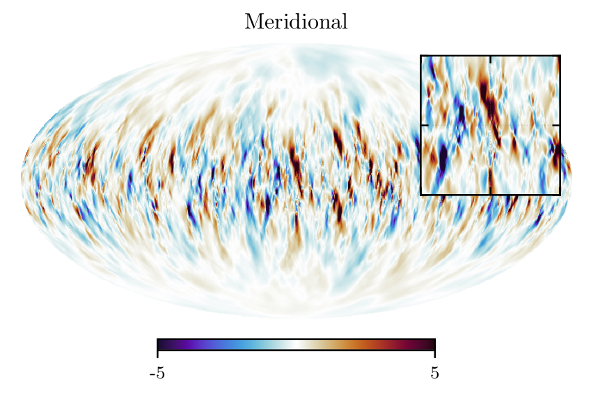
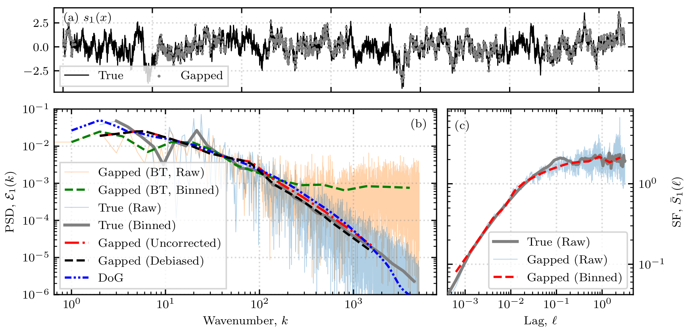
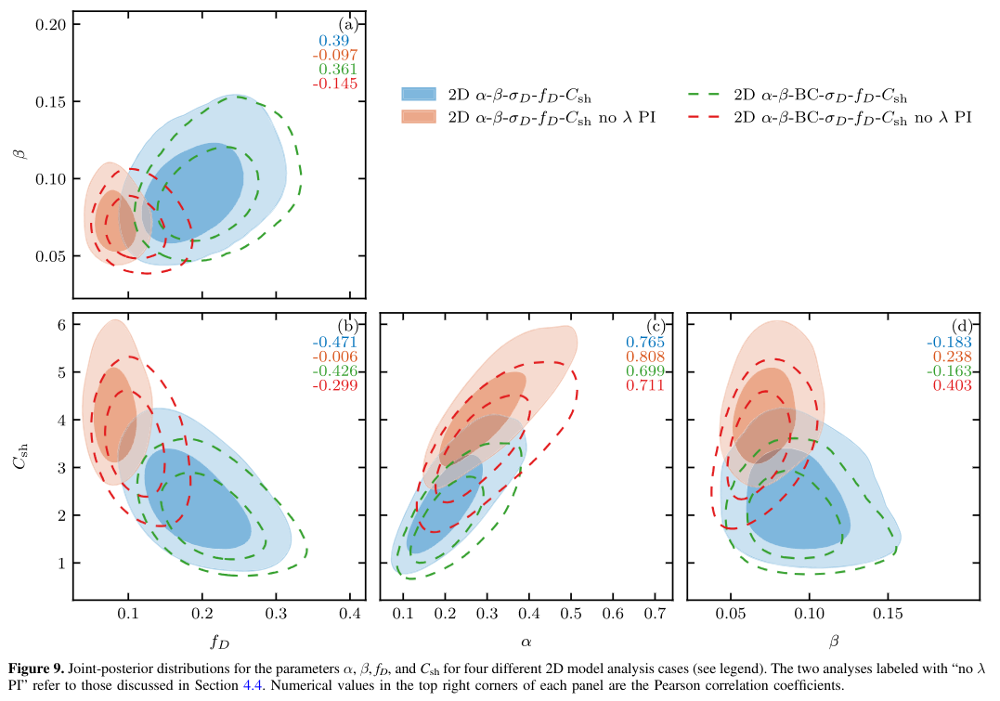

Projects

Turbulence in the Intracluster Medium
Accurate estimation of galaxy cluster masses is a central problem in cosmology, underpinning precision constraints on structure formation and the matter content of the Universe. A key source of systematic uncertainty arises from non-thermal pressure support introduced by mergers, feedback processes, and motions of galaxies. These processes generate gas motions that are typically interpreted as turbulence.
My research has involved measuring the turbulence cascade rates, energies, and characteristic scales and how observations bias these measurements.
Some relevant work:

Solar Wind Transport Models
Charged particles are ejected from the sun and transported radially outward to the edge of the solar system, this plasma is called the solar wind. The evolution of magnetohydrodynamic scale fluctuations in the solar wind is a topic of long-standing interest, with relevance to various aspects of space physics including space weather, cosmic rays and their roles in connection with the global evolution of heliospheric fields.
My research has involved investigating different modelling assumptions and the affect it has on the evolution of energies and length scales and comparing these results to observations.
Some relevant work:

Full-sky Synchrotron Emission
Detection of the inflationary B-mode signal remains a primary goal for confirming the inflationary model and constraining the tensor properties of the universe. However, this cosmological signal is heavily obscured by Galactic foregrounds. Synchrotron emission dominates the B-mode signal at low (radio) frequencies, while thermal dust emission dominates at higher (radio) frequencies. Accurately characterizing and removing these foregrounds is therefore critical for unbiased cosmological parameter estimation.
Technical Skills

Signal and Image Processing
Spectral analysis, spectral density estimation (Fourier and real-space methods), spherical harmonics, spatial and time-series data analysis in noisy/data-limited regimes.

Bayesian Analysis
Bayesian inferencing, Markov Chain Monte Carlo (MCMC) and Nested Sampling for parameter estimation and model selection.

Modelling & Simulations
Magnetohydrodynamic turbulence, turbulence transport modelling, stochastic & fractal modelling, numerical differential equation solvers.
KEA Python Package
I have developed a Python package to provide and simplify tools that are commonly used in astrophysical plasma turbulence analysis as well as testing observational processing pipelines.